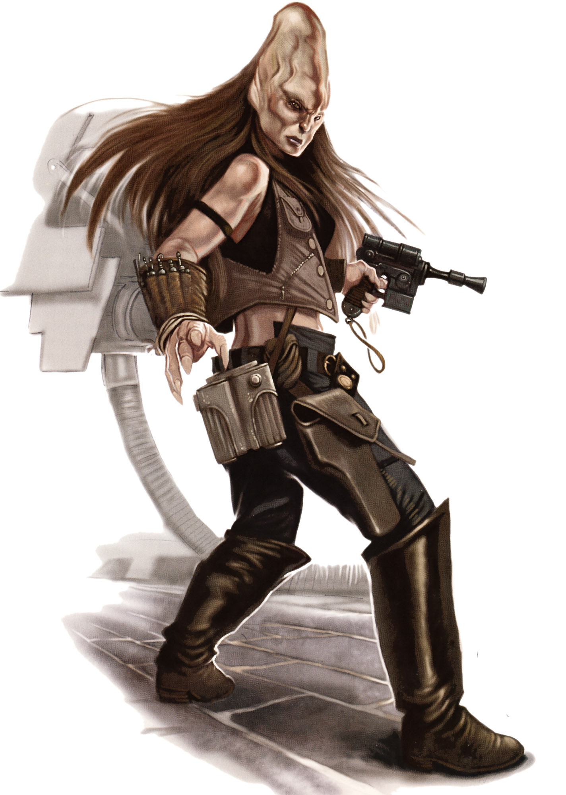

Cerean
cerean
Special Abilities: Cereans begin the game with one rank in Vigilance. They still may not train Vigilance above rank 2 during character creation.
Binary Processing: Cereans treat all Knowledge skills as career skills.
Cereans are a distinctive species. Though they are similar in appearance to humans, their one noticeable difference comprises their extended, almost cone-like skulls, which house large, binary brains (in essence, two brains closely linked together). Because of their binary brains, members of this humanoid species can simultaneously pursue multiple lines of thought and have extraordinary mental aptitude. The species is also known for attention to detail as well as a cultural tendency toward extended contemplation.
Cereans are mammalian, with anatomy very similar to that of humans. The most notable dif ferences are the presence of the enlarged, conical cra nium—to accommodate the binary brain structure—as well as a pair of hearts to improve blood circulation. Cereans are generally regarded as somewhat less physically coordinated than humans.
Cereans exhibit an unusual sexual dimorphism. Female births outnumber male births by a ratio of twenty to one. Further, males age more rapidly than females. Consequently, female Cereans dominate the world’s population.
Cerean culture is focused on preserving the undamaged portions of their homeworld and living in harmony with the natural world. Meditation is a cen tral part of their lives, often in conjunction with kasha crystals. These stones aid in calming and cleansing the mind, helping users to harness their natural energies.
Partly due to their imbalanced sexual ratio, Cer ean society is primarily matriarchal. The government is ruled by a president who works with a Council of Elders. Decisions are made only after lengthy discus sions that thoroughly analyze both sides of an issue, with concerted efforts toward achieving objectivity. No tably, once the council makes a resolution, its decision is final, with no opportunity for appeal. Cereans believe so absolutely in their infallibility that they assume all decisions made by the council are correct. Revisiting such a decision may only happen due to changing circumstances or new, previously unknown information.
Tradition plays a major role in Cerean life. This be gins with an individual’s name. Most Cereans have three names, derived from their parents and grand parents. Clothing styles are also highly traditional, established over centuries. Many Cereans train in the use of an ancient, curved sword known as the shyarn. Duelists often focus on a highly artistic and stylized combat style as a means of releasing their aggression. Some argue that this catharsis plays a critical role in maintaining their peaceful society.
Cerea is a Mid Rim world with strong isolationist tendencies. Historically a verdant para dise, Cerea chose a neutral stance during the Clone Wars. However, it allowed large numbers of refugees displaced by the fighting to settle in its enclaves, cre ating tremendous population pressures and cultural clashes. Since the Clone Wars, Cerea has attempted to remain isolated from the galaxy at large.
All Cereans learn Basic during their child hood, as well as native Cerean. Cerean uses glottal stops and a large number of lengthy compound words.
Cereans have a cultural pre disposition for meditation and contemplation, which can be linked to a tendency to embrace the Force. Their inherent knack for analysis also grants them a degree of insight comparable to the precognition that some talented Force users can master. Legends suggest that some accomplished Cerean Jedi were able to use their binary brains to simultaneously explore both the dark and light sides of the Force.
After the Battle of Cerea and the later killing of Cerean Jedi Master Ki-Adi-Mundi by his own troops during the Jedi Purges, Cerea with drew inward to nurse its wounds and tend to itself. However, Cereans historically have had a suspicious attitude toward outsiders.
Cereans have always worked to maintain har mony with themselves and their environment. Consequentially, they limit the amount of tech nology they use in their everyday life, especially if that technology could harm the planetary ecology. The Cereans have also generally made a point to limit the impact non-Cereans can have on their planet. Thus, outsiders and immigrants may only settle in the so-called Outsider Citadels. These vast structures tower over the surrounding landscapes. Within the Citadels’ of ten cramped and squalid confines, non-Cereans are free to live without following the Cereans’ strict rules concerning offworld technology and non-polluting lifestyles. Needless to say, this has led to the Outsider Citadels’ having become havens of vice and criminal enterprise.